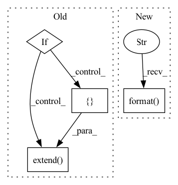

Pattern ID :12830
Before Change
if self.iid_field:
info.extend(["The number of items: {}".format(self.item_num),
"Average actions of items: {}".format(self.avg_actions_of_items)])
if self.dgl_graph is not None:
info.extend([ "The number of nodes: {}".format(self.dgl_graph.number_of_nodes()),
"The number of edges: {}".format(self.dgl_graph.number_of_edges()))
info.append("The number of inters: {}".format(self.inter_num))
if self.uid_field and self.iid_field:
info.append("The sparsity of the dataset: {}%".format(self.sparsity * 100))
After Change
if self.iid_field:
info.extend(["The number of items: {}".format(self.item_num),
"Average actions of items: {}".format(self.avg_actions_of_items)])
info.append("The number of connections of social network: {}".format( len(self.net_feat)) )
info.append("The number of inters: {}".format(self.inter_num))
if self.uid_field and self.iid_field:
info.append("The sparsity of the dataset: {}%".format(self.sparsity * 100))In pattern: SUPERPATTERN
Frequency: 3
Non-data size: 4
Instances Fragment ID: 43399110
Project Name: rucaibox/recbole
Commit Name: e58b6fa3113fdb4056eb1229da04a09e4fd9fc58
Time: 2020-09-08
Author: houyupeng@ruc.edu.cn
File Name: recbox/data/dataset/social_dataset.py
M Class Name: SocialDataset
N Class Name: SocialDataset
M Method Name: __str__(1)
N Method Name: __str__(1)
M Parent Class: Dataset
N Parent Class: Dataset
M File Name: recbox/data/dataset/social_dataset.py
N File Name: recbox/data/dataset/social_dataset.py
M Start Line: 107
M End Line: 117
N Start Line: 130
N End Line: 137
Before Change
for i in range(len(hidden_dims)-1):
curr_shape, next_shape = hidden_dims[i], hidden_dims[i+1]
curr_network = get_network([curr_shape, next_shape])
if use_batch_norm:
self.networks.extend([curr_network, act_cls()])
else:
bn_layer = torch.nn.BatchNorm1d(hidden_dims[i+1])
self.networks.extend([ curr_network, act_cls(), bn_layer)
final_network = get_network([hidden_dims[-1],out_dim])
self.networks.extend([final_network, out_act_cls()])
self.networks = nn.ModuleList(self.networks)
After Change
class VNetwork(nn.Module):
def __init__(self,input_dim, out_dim, hidden_dims, act_fn="relu", out_act_fn="identity", **kwargs):
super(VNetwork, self).__init__()
print("redundant parameters for V network: {}".format( kwargs) )
if type(hidden_dims) == int:
hidden_dims = [hidden_dims]
hidden_dims = [input_dim] + hidden_dims Fragment ID: 43399111
Project Name: x35f/unstable_baselines
Commit Name: a5871d3488b73457316980bf84fb817d1081de6d
Time: 2021-11-20
Author: 1621322691@qq.com
File Name: common/networks.py
M Class Name: VNetwork
N Class Name: VNetwork
M Method Name: __init__(6)
N Method Name: __init__(8)
M Parent Class: nn.Module
N Parent Class: nn.Module
M File Name: common/networks.py
N File Name: common/networks.py
M Start Line: 74
M End Line: 90
N Start Line: 73
N End Line: 83
Before Change
for i in range(len(hidden_dims)-1):
curr_shape, next_shape = hidden_dims[i], hidden_dims[i+1]
curr_network = get_network([curr_shape, next_shape])
if use_batch_norm:
self.networks.extend([curr_network, act_cls()])
else:
bn_layer = torch.nn.BatchNorm1d(hidden_dims[i+1])
self.networks.extend([ curr_network, act_cls(), bn_layer)
final_network = get_network([hidden_dims[-1],out_dim])
self.networks.extend([final_network, out_act_cls()])
self.networks = nn.ModuleList(self.networks)
After Change
class QNetwork(nn.Module):
def __init__(self,input_dim, out_dim, hidden_dims, act_fn="relu", out_act_fn="identity", **kwargs):
print("redundant parameters for Q network: {}".format( kwargs) )
super(QNetwork, self).__init__()
if type(hidden_dims) == int:
hidden_dims = [hidden_dims] Fragment ID: 43399116
Project Name: x35f/unstable_baselines
Commit Name: a5871d3488b73457316980bf84fb817d1081de6d
Time: 2021-11-20
Author: 1621322691@qq.com
File Name: common/networks.py
M Class Name: QNetwork
N Class Name: QNetwork
M Method Name: __init__(6)
N Method Name: __init__(7)
M Parent Class: nn.Module
N Parent Class: nn.Module
M File Name: common/networks.py
N File Name: common/networks.py
M Start Line: 47
M End Line: 63
N Start Line: 48
N End Line: 59